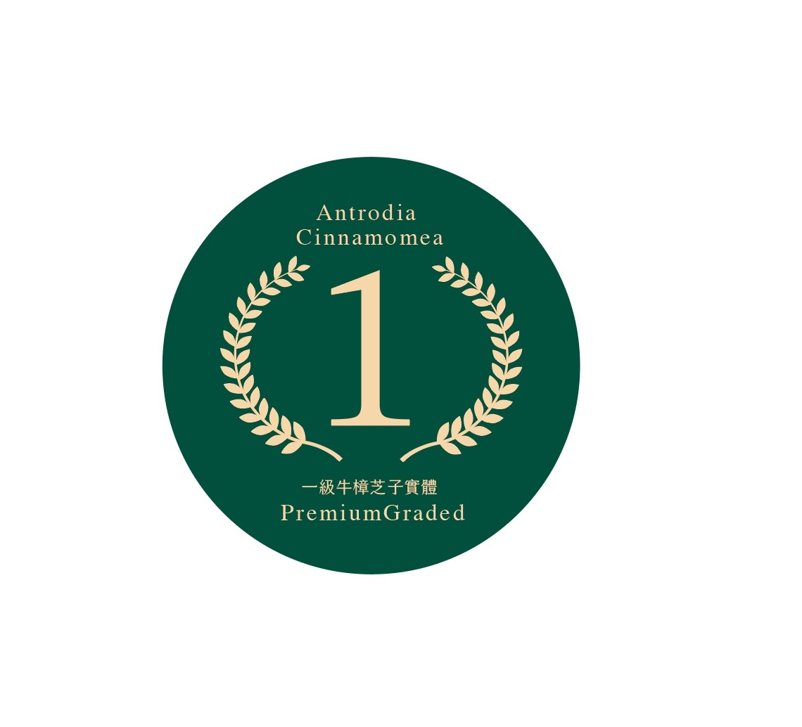
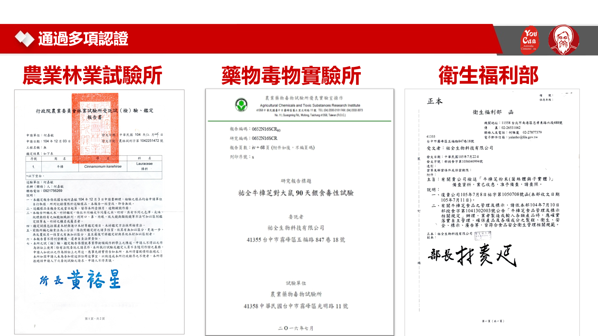
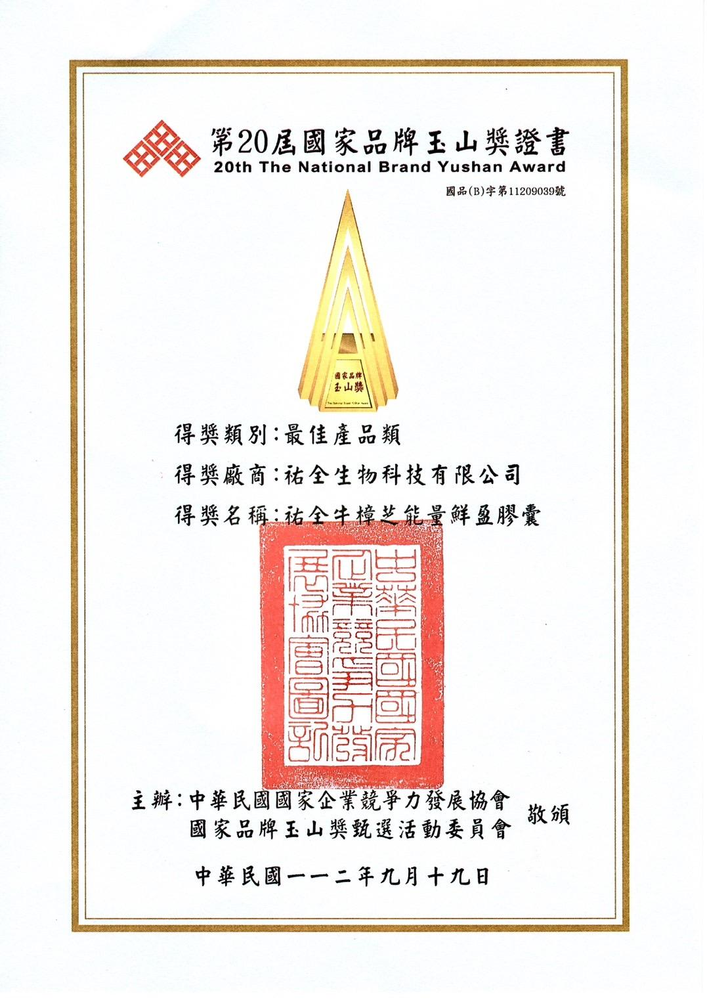
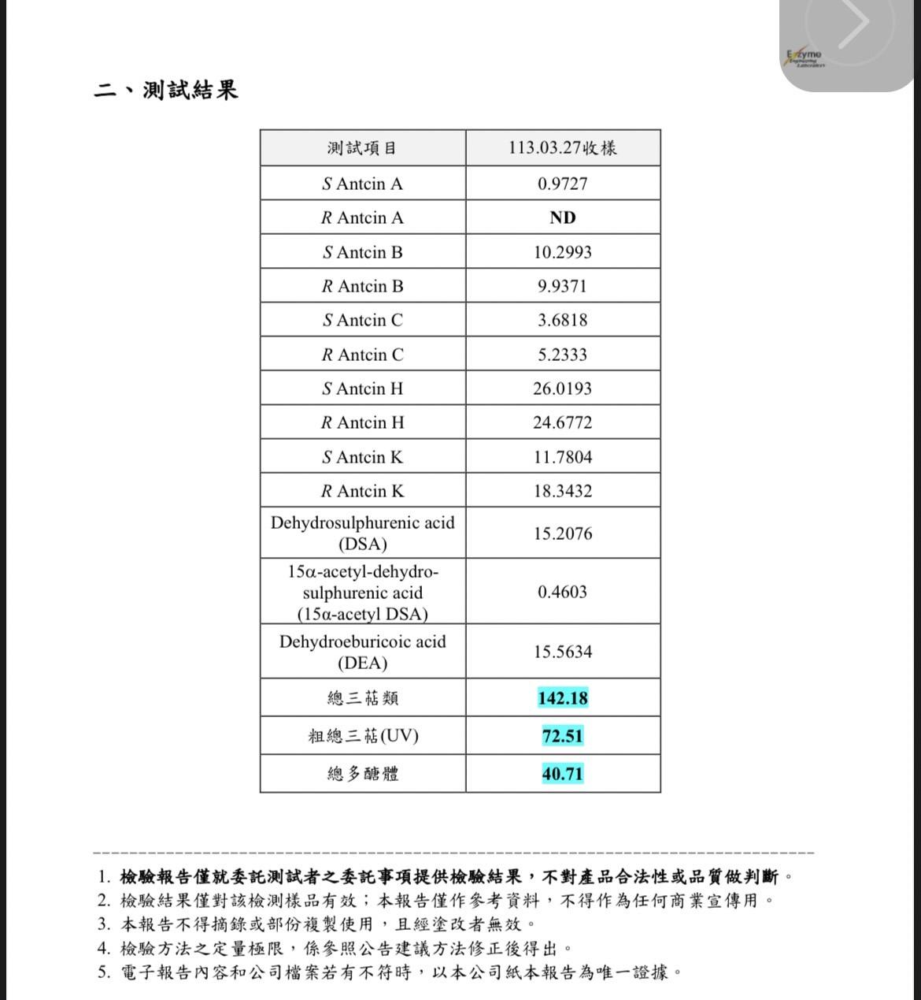
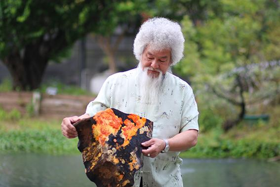

Antrodia Cinnamomea
Ingredients for
Premium Formulations
Taiwan's largest log-cultivated Antrodia cinnamomea supplier. CNS 16152 Grade 1 certified, vintage-graded, with complete regulatory documentation — ready for your capsule, tablet, and sachet lines.
Your Customers Are Already
Looking for This.
Southeast Asian health food consumers are shifting from generic vitamins to functional ingredients with a traceable origin story. They want science, not marketing claims. They want to know where it comes from and what's in it.
Functional mushroom supplement market growing at double digits — Southeast Asia is an emerging demand center
Antrodia cinnamomea grows only in Taiwan. Your competitors cannot source it authentically — anywhere
Peer-reviewed science your R&D and sales teams can actually cite — not generic wellness claims
Paris Olympics Taiwan Pavilion 2024 + National Brand Yushan Award — your products already have a story to tell
Thai health food consumers are increasingly demanding premium, origin-verified, functional ingredients. The brands that move first with authenticated Antrodia will own the category positioning in your market — before competitors catch on.
Antrodia is well-known in Taiwan's health market. In Southeast Asia, it is still an early-adopter ingredient — the window to establish premium positioning is open. It won't stay open indefinitely.
Twenty Years.
One Ingredient. No Shortcuts.
In 2004, YouCan Biotech started with one conviction: that Antrodia cinnamomea — Taiwan's rarest endemic mushroom — could be cultivated at commercial scale without compromising quality. Twenty years later, we are still growing the same single ingredient. Nothing else.
"Most suppliers diversify. We didn't. Twenty years of focus on one species is what produces 14.2% triterpenoids — not a shortcut, not a formula tweak."
Founded in Wufeng, Taichung — Taiwan's heartland for Antrodia cultivation. First commercial log-cultivation facility.
Year — the only supplier with full vintage grading and CNS 16152 Grade 1 certification at this scale.
Peer-reviewed papers. The science library your R&D and regulatory teams need to make health claims.
Safety tests per production lot — zero heavy metals, zero pesticides, zero pharmaceutical adulterants.
A supplier who grows 12 different mushrooms cannot optimize cultivation for any one of them. Our entire institutional knowledge — every camphor log, every harvest, every test over 20 years — is concentrated on one species. That is why our numbers are consistently higher than industry averages.
National Brand Yushan Award 2023 — Best Product Category
2024 Paris Olympics · Taiwan Pavilion Official Gift Selection
2025 Brain Health Innovation Award · Taiwan Nutritional Psychiatry Society
H-MART Bay Area · Thryve Superfoods — on shelf in the US market
Wood-Grown Antrodia Fruiting Body.
Not All Antrodia Is the Same.
The ingredient category is called "Antrodia cinnamomea" — but products sold under this name vary enormously depending on whether they are fruiting body or mycelium, and whether they are wood-grown or grain-grown. The raw material you specify determines what ends up in your capsule.
Present only in fruiting body, not mycelium. These 8 compounds are the biomarkers CNS 16152 was written to measure — without them, the product cannot qualify.
Wood-grown fruiting body triggers full triterpenoid metabolism. Grain-grown products typically yield 2–5%. The camphor wood substrate is what makes the chemistry possible.
Taiwan's national standard applies to fruiting body only. Mycelium and grain-grown products do not qualify — they cannot carry this certification on your packaging.
Wood-grown replication of wild conditions. MOA-verified — the same compound identity as wild-harvested Antrodia, at commercial scale and consistent quality.
| Parameter | Wood-Grown Fruiting Body | Mycelium | Grain-Grown |
|---|---|---|---|
| Triterpenoid content | 14.2% | Low / absent | 2–5% |
| 8 marker antcins | All 8 present | Absent | Incomplete |
| CNS 16152 eligible | Yes — Grade 1 | No | No |
| Polysaccharides | 11.16 g/100g | Variable | Largely starch |
| DNA species verified | MOA 99% | Rarely tested | Rarely tested |
| Vintage grade mark | Licensable | Not applicable | Not applicable |
Many "Antrodia cinnamomea" products on the market are mycelium-based or grain-grown. They can legally carry the species name — but they lack the marker antcins that define the ingredient's therapeutic value and CNS 16152 eligibility.
Choose the Format
Your Formulation Needs
Standardized
Extract Powder
Hot water extraction, spray-dried. Standardized to ≥ 14.2% total triterpenoids. Consistent batch-to-batch. Free-flowing powder for capsule filling or tablet compression.
Capsules · Tablets · SachetsSupercritical
CO₂ Extract
High-concentration lipophilic extraction. Maximum triterpenoid density. Optimal for premium softgels and sublingual applications where potency per serving is the priority.
Softgels · Sublingual · Premium CapsulesDual Extract
Powder
Water extraction (polysaccharides) + CO₂ extraction (triterpenoids) combined. Full-spectrum bioactive profile in a single ingredient. Industry gold standard for premium mushroom products.
Premium Capsules · Functional BeveragesWhole Fruiting
Body Powder
Full-spectrum, minimally processed. Ideal for "whole food" label positioning. Lower concentration, larger serving size. Good for functional food applications and blending.
Tablets · Functional Food · Blends
CNS 16152 · Grade 1
Taiwan's national standard for Antrodia fruiting body — Grade 1 (Premium). Your product packaging can carry this mark. Consumers see government verification, not a supplier's self-claim.
→ Supports a premium price point on shelf
Vintage Grade Mark
4-Year · 8-Year · 10-Year
Three age tiers, each with a licensable mark you can print on your packaging. Like wine vintages — same origin, different maturity, different pricing. Build a product line from a single ingredient.
→ Create tiered SKUs and price segmentation
The Numbers Your
R&D Team Will Ask For
18% above CNS16152 Grade 1 threshold (12%). Contains 8 Antrodia-exclusive small-molecule antcins (Antcin A/B/C/H/K, DSA, DEA, 15α-acetyl DSA) — the marker compounds no other mushroom species produces.
Verified by Taiwan Ministry of Agriculture DNA analysis. Authentic species identity — not a substitute strain.
Consistent across production batches. Beta-glucans and immunomodulatory polysaccharides fully characterized.
Taiwan Agriculture Research (TACTRI) study: fruiting body + mycelium combination shows measurable immunomodulatory uplift.
| Parameter | Specification |
|---|---|
| Triterpenoids (8 unique antcins) | ≥ 14.2% (CNS16152 Grade 1) |
| Polysaccharides | ≥ 11.16 g / 100g |
| Pesticide residues | Zero detected (380 compounds) |
| Heavy metals | Zero detected (4 metals) |
| Pharmaceutical adulterants | Zero detected (315 compounds) |
| Moisture content | [Spec available on request] |
| Shelf life | 3 years (sealed, stored at 25°C) |
Everything Your Regulatory
Team Needs to File.
We understand what your local regulatory team will ask for. Every shipment comes with complete documentation so your market filing process is straightforward — not a battle with your supplier.
- Certificate of Analysis (COA) — per lot, in English, with all tested parameters
- Heavy metals panel — 4 metals, zero detected, third-party verified
- Pesticide screening — 380 compounds, zero detected
- Pharmaceutical adulterant screen — 315 compounds
- Microbiological testing — standard food safety panel
- 90-day toxicology report — the only Antrodia supplier to test both fruiting body AND mycelium; full documentation available
- Academic literature pack — curated selection of 37+ papers relevant to your health claims
- Species verification — MOA DNA certificate confirming 99% identity to wild Antrodia
YouCan Biotech is the only Antrodia cinnamomea supplier in Taiwan to conduct 90-day animal toxicology testing on both the fruiting body and the mycelium. Most competitors test only one. This gives your regulatory submission a level of safety documentation no other supplier can match.
NT$50,000,000 product liability insurance through Cathay Insurance — protecting your supply chain. Available as documentation for your compliance team.


Efficacy & Safety Verified
by Government & Academia.
Taiwan Council of Agriculture (TACTRI) — fruiting body + mycelium combination. Government-commissioned, published.
The only Antrodia supplier to test both fruiting body AND mycelium. Industry first. Full toxicology report in documentation pack.
18% above the Grade 1 minimum (12%). 8 marker antcins verified by Chaoyang University. MOA DNA: 99% wild identity.
Zero heavy metals (4), zero pesticides (380 compounds), zero pharmaceutical adulterants (315 compounds). 37+ academic papers available.

農業部林業試驗所 · 藥物毒物實驗所 · 衛生福利部

20th National Brand Yushan Award · Best Product 2023

8 Antcin markers · Total triterpenoids 142.18 mg/g · Polysaccharides 40.71
Taiwan → Thailand:
What Your Team Needs to Know.
Good news: Antrodia cinnamomea was officially added to Thailand FDA's Authorized Novel Food List in May 2024. No new safety evaluation from scratch — you use the existing authorization as the foundation for your product registration.
File Novel Food registration with Thailand FDA (Notification No. 376). Required docs: formulation, TDS, toxicology, academic literature, GMP cert. Timeline: 6–18 months. Cost: ~THB 10,000–30,000 per SKU.
Thai importer holds the food import license. Once product registration is complete, raw material batches can be cleared via Thailand FDA's virtual number system — no per-batch individual approval required.
Each shipment: COA · MSDS · Commercial Invoice · Packing List · Certificate of Origin (Taiwan) · Certificate of Free Sale (TFDA) · Phytosanitary Cert (if applicable)
| Item | Details |
|---|---|
| HS Code | 1302.19 (standardized extract / powder) |
| Import Duty | ~5–10% MFN rate (no TW-TH FTA) |
| VAT | +7% Thailand VAT |
| Incoterms | FOB Taichung / CIF Bangkok (to confirm) |
| Classification | Novel Food — Authorized (May 2024) |
- 90-day animal toxicology report — core safety evidence for Novel Food filing
- 37+ peer-reviewed academic papers — for health claims and product registration
- MOA DNA certificate + 380-compound pesticide panel — meets Thailand Codex standards
- ISO 22000 + HACCP GMP certificates — accepted by Thailand FDA
How We Make This
Low-Risk for You.
We know that switching or adding a new ingredient supplier is a commitment — in time, regulatory work, and formulation investment. Here's how we reduce that risk:
R&D Sample — First
We ship a characterised sample kit with full COA and technical data sheet. Your formulation team evaluates before any commitment is made.
Trial Order
Small initial order with full documentation package. Use it to complete your regulatory filing and prototype formulation.
Scale Up
Once your product is ready to launch, we align on volume commitments, lead times, and production scheduling to ensure supply continuity.
| Item | Details |
|---|---|
| R&D Samples | Available — contact us to request |
| Minimum Order Qty | 20 kg |
| Standard Lead Time | 3–6 weeks from order confirmation |
| Available formats | Powder, CO₂ extract, dual extract, whole powder |
| Documentation | COA, SDS, toxicology, pesticide, DNA cert |
| Technical support | Formulation consultation included |
| Export experience | US, Hong Kong, Macau, Taiwan domestic |
| Payment terms | T/T — 30% deposit on order confirmation, 70% prior to shipment |
We've supplied to markets with strict import requirements. Our documentation team prepares country-specific regulatory packs — so your filing process is smooth, not a back-and-forth with your supplier.
Two Marks on Your Label.
Two Reasons Consumers Pay More.
We can license two marks directly to your brand — both printable on your product packaging. The Vintage Grade Mark (4-Year / 8-Year / 10-Year) signals age and maturity to consumers. The CNS 16152 Grade 1 mark signals government-verified quality. Together, they give your product two independent reasons to command a higher price on shelf.
Every batch traces back to a specific log, a specific harvest date, a specific cultivation site in Wufeng, Taiwan. We can supply farm-to-formula story content for your brand — founder narrative, cultivation photos, short-form video (TikTok) — so your product has a story consumers believe.

Mr. Hsu Ming-De — Founder
Cultivation site, Wufeng, Taichung · 20 years growing Antrodia on camphor wood logs
Order a Small Trial Batch.
Test It. Then Decide.
A trial batch lets your R&D team run the real formulation tests — not just read a spec sheet. No large commitment, no risk. If the quality is right, we move forward. If it isn't, you walk away.
or Dual Extract
for lab testing
+ Spec Sheet
Certificate of Analysis (COA) — triterpenoids, polysaccharides, 8 marker antcins
Heavy metals, pesticide residue (380 compounds), adulterant screen results
90-day animal safety report — ready for your regulatory team
Curated academic literature — 5 key studies for Thailand market health claims
Tell us your target format today — we'll confirm availability and prepare your trial shipment within the week.
The Window to Own
Antrodia in Your Market
Is Open Now.
We're here. Let's make time today to talk about samples, specifications, and what building this category together could look like for your business.